扉页
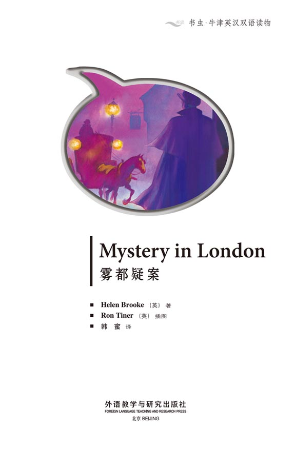
Copyright
Copyright © Foreign Language Teaching and Research Press 2007
All rights reserved. No part of this publication may be reproduced or distributed by any means, or stored in a database or retrieval system, without the prior written permission of Foreign Language Teaching and Research Press.
本书版权由外语教学与研究出版社独家所有。如未获得该社书面同意，书中任何部分之文字及图片，不得用任何方式抄袭、节录、翻印或存储利用于任何数据库及检索系统等。
Published by Foreign Language Teaching and Research Press
No. 19 Xisanhuan Beilu
Beijing, China 100089
http://www.fltrp.com
版权页
京权图字：01-2006-2797
Originally published by Oxford University Press, Great Clarendon Street, Oxford. © 2000 This edition is licensed for sale in the People's Republic of China only and not for export therefrom.
'Oxford' is a registered trademark of Oxford University Press.
图书在版编目（CIP）数据
雾都疑案：英汉对照／（英）布鲁克（Brooke, H. ）著．—北京：外语教学与研究出版社，2006. 5（2013. 12重印）
（书虫·牛津英汉双语读物）
书名原文：Mystery in London
ISBN 978-7-5600-5419-3
Ⅰ．雾… Ⅱ．布… Ⅲ．①英语—汉语—对照读物 ②漫画—作品—英国—现代 Ⅳ．H319.4: J
中国版本图书馆CIP数据核字（2007）第018924号
出版人：蔡剑峰
责任编辑：周 晶
封面设计：孙莉明
出版发行：外语教学与研究出版社
社 址：北京市西三环北路19号（100089）
网 址：http://www.fltrp.com
书 号：ISBN 978-7-5600-5419-3
* * *
制售盗版必究 举报查实奖励
版权保护举报电话：(010)88817519
目录
Mystery in London
Mystery in London
1 It is the year 1898, and you are Mycroft Pound, the famous detective. You are sitting in your house in London, one cold November evening. There is a knock at the door. It is Inspector Freewell of the London police.
'Can you come to Whitechapel, Mr Pound? We need your help. There's a woman in the street. She isn't dead, but there's blood everywhere. We think it's the Whitechapel Killer again.'
■You put on your coat. Go to 18.
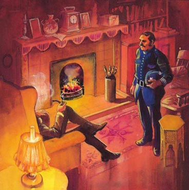
2 You are in Annie's house. A woman comes in.
'Who are you? What are you doing here?' she asks.
You tell her about Annie.
'That's terrible,' she says.
'Do you know any of her friends?' you ask.
The woman thinks. 'Her best friend is a woman called Rosy. She lives in Limehouse Street. But she has a boyfriend. That's him, there, in that picture. I don't like him.'
■You go back to the Rose and Crown to talk to the other people. Go to 10.
■You go to Limehouse Street to look for Rosy. Go to 35.
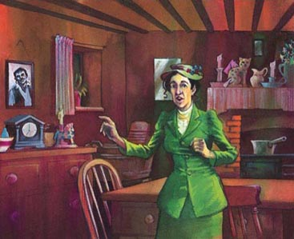
3 You want to get on to the Californian and talk to Jack.
■You jump in the water and swim after the ship. Go to 8.
■You cannot swim. You think about how you can get on the ship. Go to 13.
4 'Do you know the name of the woman in the street?' you ask the old man.
He cannot hear you and he does not answer.
■Go to 10.
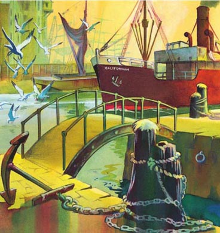
5 You go across the bridge, but you cannot see the Californian. There is a sailor in one of the small boats, and there is an old man fishing.
■You ask the sailor for help. Go to 24.
■You ask the old man for help. Go to 34.
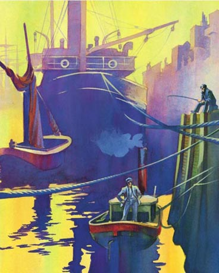
6 You talk to the young man. He comes into the street and looks at the woman.
'Her name's Annie, I think,' he says.
'Do you know where she lives?'
'Yes. She lives in Cable Street, I think.'
■You go back into the Rose and Crown and talk to the other people. Go to 10.
■You go to Cable Street. Go to 30.

7 The captain of the Californian calls the three Jacks. Which Jack do you want to speak to?
■The Jack on the left. Go to 17.
■The Jack in the middle. Go to 23.
■The Jack on the right. Go to 31.
8 You jump into the water and swim after the ship. But the ship is going very fast. After five minutes, the Californian is out of the London docks and going to India. And you are now very cold.
■Go to 22.
9 You tell Rosy about Annie.
'I'm Annie's best friend,' she says. She is crying.'But she has a boyfriend.'
'Who's he?' you ask.
'A sailor. His name's Jack. He's often at her house in Cable Street. His ship's in the London docks now, I think.'
■You want to find Jack, so you go to the docks. Go to 14.
■You want to find out more about Annie so you go to her house in Cable Street. Go to 19.
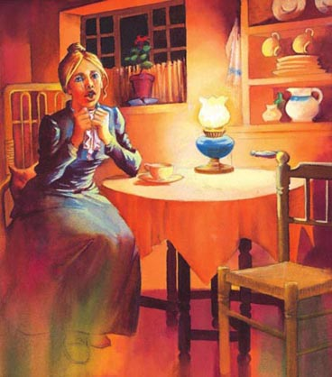
10 There are four people in the Rose and Crown. You want to ask some questions about the woman in the street. Who do you talk to first?
■You talk to the old man. Go to 4.
■You talk to the young man. Go to 6.
■You talk to the old woman. Go to 15.
■You talk to the young woman. Go to 28.
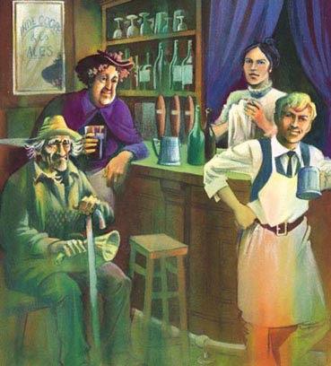
11 The sailor looks at you.
'Jack?' he says. 'There are hundreds of sailors called Jack. There's a Jack on every ship.'
You must find the name of Jack's ship. You go to Annie's room to look for more information.
■Go to 19.
12 You are in the London docks. There are hundreds of ships. You want to find the Californian and you want to catch Jack.
■You go across the bridge. Go to 5.
■You go to the right. Go to 20.
■You go to the left. Go to 29.
13 There is a bridge across the water. You go on the bridge and jump onto the Californian. You go to the captain.
'There's a man on your ship I must talk to,' you say.'His name is Jack.'
'Why do you want to talk to him?' he asks.
'He's the Whitechapel Killer, I think.'
'There are three Jacks on my ship,' says the captain.
'Can I see them all?' you ask.
■Go to 7.

14 You go to the London docks to look for Jack, Annie's friend. There are hundreds of ships, and thousands of sailors. You talk to a sailor.
'Do you know a sailor called Jack?' you ask.
■Go to 11.
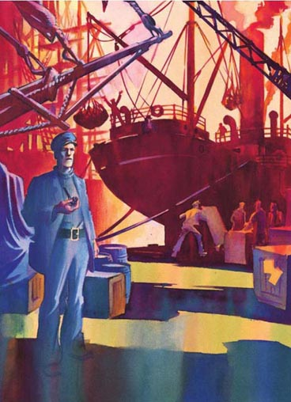
15 You talk to the old woman. She comes into the street and looks at the woman.
'Her name's Annie,' she says.
'Do you know where she lives?' you ask.
'Yes. She lives in Cable Street. I don't know what number,' she answers.
■You go back to the Rose and Crown and talk to the other people. Go to 10.
■You go to Cable Street. Go to 30.
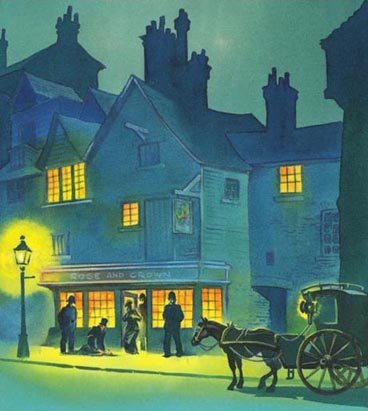
16 You knock at the white door. A young woman opens the door.
'Are you Rosy?' you ask.
'Yes.'
'Are you a friend of Annie?'
'Yes,' she says.
'I've got bad news for you,' you say. 'I'm afraid she's very ill.'
'No.' Rosy starts to cry.
■Go to 9.
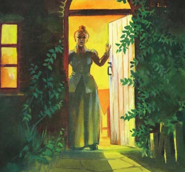
17 You talk to the Jack on the left. He is not the Whitechapel Killer.
■Go to 7.
18 The Whitechapel Killer attacks people with a long knife. Six women are dead because of him.
You arrive in Whitechapel and the police are waiting for you there. The woman is lying in the street, near the Rose and Crown. She is very ill, so she cannot talk to you. You see some bicycle tracks on the road.
■You follow the bicycle tracks. Go to 25.
■You go into the Rose and Crown. You want to talk to the people there. Go to 10.
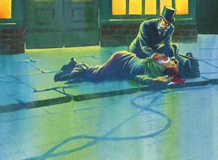
19 You look in Annie's house and find a letter.
The Californian, Saturday
Annie,
Tomorrow my ship is going to India. Please meet me at the Rose and Crown tonight. I have something very important for you.
Jack
So the name of Jack's ship is the Californian. Is Jack the man you want? Is Jack the Whitechapel Killer? You go to the London docks to look for Jack on the Californian.
■Go to 12.
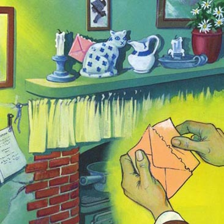
20 There are a lot of ships, but you cannot see the Californian here.
■Go back to 12.
21 You knock on the blue door. An old man opens it.
'I'm looking for Rosy,' you say.
'She doesn't live here,' he says. 'She lives in the white house, I think.'
■Go to 16.
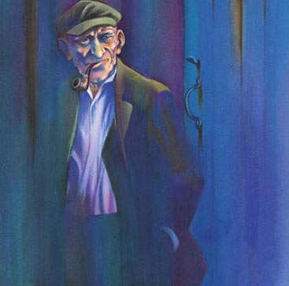
22 The Whitechapel Killer is free. Can you be a better detective next time? Try again.
■Go back to 1.
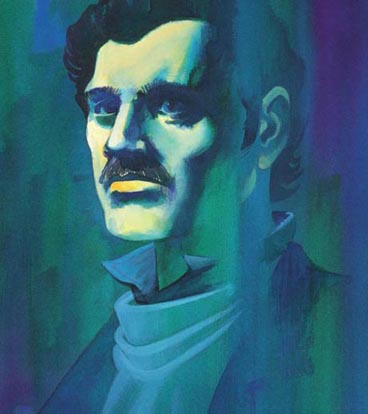
23 You talk to the Jack in the middle. He is not the Whitechapel Killer.
■Go to 7.
24 You talk to the sailor.
'Do you know a ship called the Californian?' you ask him.
The sailor looks at you. 'I am from Russia,' he says. 'I do not speak English.'
■Go to 5.
25 You follow the bicycle tracks to a bigger road, so you cannot see the tracks any more.
■Go to 18.
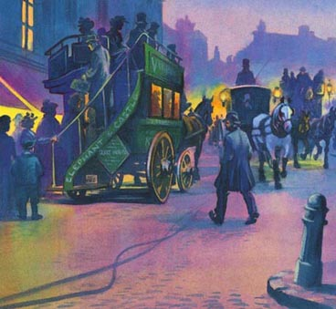
26 You knock on the red door. There is no one at home.
■Go to 35.
27 There is a knife in his pocket. And there is blood on it. This Jack is the Whitechapel Killer.
■Go to 33.
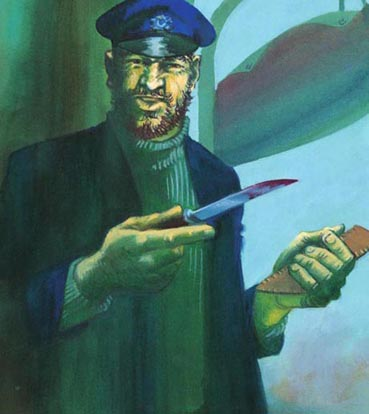
28 'Do you know the name of the woman in the street?' you ask the young woman in the Rose and Crown. She comes out into the street and looks at her.'I don't know her name but she has a friend called Rosy. Ask her!'
'Where does Rosy live?' you ask.
'She lives in Limehouse Street.'
■You go back to the Rose and Crown and talk to the other people. Go to 10.
■You go to Limehouse Street to find Rosy. Go to 35.
29 You go to the East India Dock. You can see the Californian, but it is sailing out of the dock.
■You can see Jack so you try to get on the ship. Go to 3.
■You cannot see Jack on the ship. You can go to the hospital and talk to Annie, and you can write to the Indian police about Jack. Go to 22.
30 You go to Cable Street, and talk to the people there. After a few minutes you find Annie's house. You look at everything very carefully.
■Go to 2.
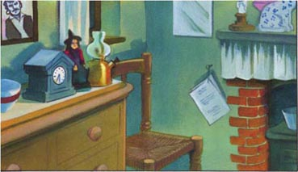
31 You talk to the Jack on the right.
'Do you know a woman called Annie?' you ask.
'No,' he says.
But this Jack has an earring. And there is something in his pocket. Is it a knife? Perhaps this Jack is the Whitechapel Killer.
■Go to 27.
32 Another good day's work for Mycroft Pound, the great detective, finishes. You go back to your house. No criminal is safe in London when Mycroft, the great detective, is at work.
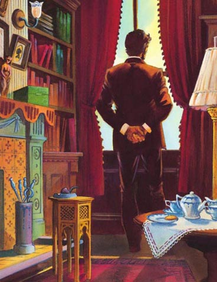
33 The captain helps you, and you arrest the Whitechapel Killer. You take him off the ship and give him to the police.
■Go to 32.
34 You talk to the old man.
'Do you know a ship called the Californian?' you ask him.
'Yes,' he says. 'It's going to India today, so it's in the East India Dock.'
You must find the East India Dock.
■Go to 12.
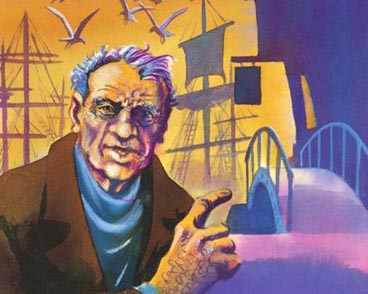
35 You go to Limehouse Street. You are looking for Rosy, Annie's friend. Which house do you want to try first?
■The house with the white door. Go to 16.
■The house with the blue door. Go to 21.
■The house with the red door. Go to 26.
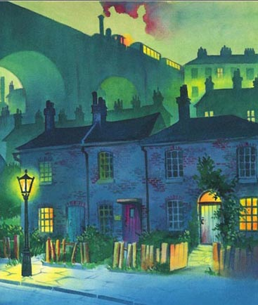
ACTIVITIES Before Reading
ACTIVITIES
Before Reading
1. Look at the front and back cover of the book and choose the correct ending for these sentences.
1) The story happens . . .
a about twenty years ago.
b about fifty years ago.
c about a hundred years ago.
2) Mycroft Pound is . . .
a a doctor.
b a teacher.
c a detective.
2. Guess what happens. For each sentence choose one answer.
1) Somebody kills a rich man.
Yes/No
2) The police put Mycroft Pound in prison.
Yes/No
3) The police put the Whitechapel Killer in prison.
Yes/No
4) Mycroft Pound catches the Whitechapel Killer.
Yes/No
ACTIVITIES While Reading
ACTIVITIES
While Reading
1. Read the first two parts of the story (1 and 18). Are these sentences true (T) or false (F)?
1) The story is in the summer.
T/F
2) At the beginning of the story, Mycroft Pound is at home.
T/F
3) The police come to Mycroft Pound's home.
T/F
4) A woman is dead in the street.
T/F
5) The woman is in the Rose and Crown.
T/F
6) The Whitechapel Killer uses a knife.
T/F
7) There is a bicycle near the woman.
T/F
8) There are bicycle tracks near the woman.
T/F
2. What next? Where next? Complete the following sentences.
1) The bicycle tracks go . . .
a nowhere.
b to the killer's house.
c to the woman's house.
2) In the Rose and Crown Mycroft finds . . .
a nobody.
b a lot of people.
c a few people.
3) In the Rose and Crown people are . . .
a singing.
b drinking beer.
c reading.
4) The woman . . .
a dies.
b does not die.
5) The Whitechapel Killer is . . .
a a dog.
b a woman.
c a man.
6) The woman cannot talk . . .
a because she is dying.
b because she is ill.
c because she is afraid.
ACTIVITIES After Reading
ACTIVITIES
After Reading
1. Answer these questions.
Who
1) . . . asks Mycroft for help at the beginning of the story?
2) . . . talks to the people in the Rose and Crown?
3) . . . lives in Cable Street?
4) . . . lives in a house with a white door?
5) . . . is going to India on a ship?
6) . . . jumps onto the Californian?
2. Who says this? Who do they say it to?
1) 'I'm Annie's best friend.'______says this to______.
2) 'There's a man on your ship I must talk to.'______says this to______.
3) 'Can you come to Whitechapel?'______says this to______.
3. Complete this summary of the story. Use these words:
boyfriend detective jumps London name police sailor ship street talks tell woman
Mycroft Pound is a famous______, who lives in______. One day the______ask him to help them; a______is lying in the______in Whitechapel in front of the Rose and Crown. Mycroft goes to Whitechapel and______to the people in the Rose and Crown. They______Mycroft that the woman's______is Annie. Annie lives in Cable Street, so Mycroft goes to her house. A woman tells him that Annie has a______; his name is Jack and he is a______. Mycroft goes to the London Docks to find Jack. Jack's______, the Californian, is leaving, but Mycroft______on to the ship. He finds Jack, and gives him to the police.
4. There are three Jacks on the Californian. Write a description of Jack, the Whitechapel Killer.
____________________________________
____________________________________
____________________________________
____________________________________
____________________________________
参考译文
参考译文
Mystery in London
雾都疑案
1 故事发生在1898年，你是著名的侦探米克罗夫特·庞德。11月一个寒冷的夜晚，你正坐在伦敦的家里。有人敲门。来者是伦敦警察局的弗利威尔巡官。
“您能来一趟白教堂吗，庞德先生？我们需要您的帮助。有个女人倒在街上。她没死，但浑身是血。我们认为这次又是‘白教堂杀手’干的。”
■你穿上外套。看第18节。
2 你在安妮家中。一个女人走了进来。
“你是谁？你在这儿干什么？”她问道。
你给她说了安妮的事。
“太可怕了。”她说。
“您认识她的朋友吗？”你问。
女人想了想。“她最好的朋友是个叫罗茜的女人，住在莱姆豪斯街。不过她有个男朋友。就是那张照片里的那个。我不喜欢他。”
■你回到“玫瑰与王冠”酒吧，询问其他人。看第10节。
■你去莱姆豪斯街找罗茜。看第35节。
3 你想上“加利福尼亚人”号找杰克谈谈。
■你跳进水中，游着去追船。看第8节。
■你不会游泳。你考虑着怎么上船。看第13节。
4 “您知道街上那个女人叫什么吗？”你问老人。
他听不见你的话，没有回答。
■看第10节。
5 你过了桥，但看不到“加利福尼亚人”号。一条小船上有个水手。有位老人在钓鱼。
■你请水手帮忙。看第24节。
■你请老人帮忙。看第34节。
6 你询问小伙子。他走到街上，看了看那个女人。
“我想她叫安妮。”他说。
“你知道她住哪儿吗？”
“知道。我想她住在缆绳街。”
■你回到“玫瑰与王冠”酒吧，询问其他人。看第10节。
■你去缆绳街。看第30节。
7 “加利福尼亚人”号的船长叫来了三个叫杰克的人。你想询问哪个杰克？
■左边的杰克。看第17节。
■中间的杰克。看第23节。
■右边的杰克。看第31节。
8 你跳进水中，游着去追船。但船开得很快。五分钟后，“加利福尼亚人”号驶出了伦敦码头，驶向印度。这时你觉得非常冷。
■看第22节。
9 你告诉罗茜安妮的事。
“我是安妮最好的朋友。”她说着哭了起来。“不过她有个男朋友。”
“他是谁？”你问。
“一个水手。他叫杰克。他经常去她缆绳街的家里。我想他的船现在就在伦敦码头。”
■你想找到杰克，于是去了码头。看第14节。
■你想多了解一些安妮的情况，于是去了她在缆绳街的家。看第19节。
10 “玫瑰与王冠”酒吧里有四个人。你想问问有关街上那个女人的事。你要先问谁？
■你询问老人。看第4节。
■你询问小伙子。看第6节。
■你询问老妇人。看第15节。
■你询问年轻姑娘。看第28节。
11 水手看着你。
“杰克？”他说，“叫杰克的水手有几百个。每条船上都有个杰克。”
你必须找出杰克所在的船的名字。你去安妮的房间寻找更多信息。
■看第19节。
12 你到了伦敦码头。那里有几百条船。你想找到“加利福尼亚人”号，抓住杰克。
■你走过桥。看第5节。
■你去右边。看第20节。
■你去左边。看第29节。
13 水面上有座桥。你上了桥，跳上“加利福尼亚人”号。你去找船长。
“我必须和您船上的一个人谈谈，”你说，“他叫杰克。”
“您为什么要和他谈？”他问道。
“我认为他是‘白教堂杀手’。”
“我这条船上有三个杰克。”船长说。
“我能都见见吗？”你问。
■看第7节。
14 你去伦敦码头找安妮的朋友杰克。那儿有几百条船，几千名水手。你和一名水手搭上了话。
“你认识一名叫杰克的水手吗？”你问道。
■看第11节。
15 你询问老妇人。她走到街上，看了看那个女人。
“她叫安妮。”她说。
“您知道她住哪儿吗？”你问。
“知道。她住在缆绳街。我不知道门牌号。”她答道。
■你回到“玫瑰与王冠”酒吧，询问其他人。看第10节。
■你去缆绳街。看第30节。
16 你敲了敲白色的门。一个年轻女人开了门。
“你是罗茜吗？”你问。
“是的。”
“你是安妮的朋友吗？”
“是的。”她说道。
“我有个坏消息告诉你，”你说，“恐怕她快不行了。”
“不。”罗茜哭了起来。
■看第9节。
17 你询问右边的杰克。他不是“白教堂杀手”。
■看第7节。
18 “白教堂杀手”用一把长刀伤人。他杀了6个女人。
你来到白教堂，警察在那里等你。那个女人倒在“玫瑰与王冠”酒吧附近的街上。她伤得很重，所以无法开口和你说话。你看到路上有一些自行车轮印。
■你沿着自行车轮印追踪。看第25节。
■你走进“玫瑰与王冠”酒吧。你想与里面的人谈谈。看第10节。
19 你在安妮的家中查看，找到一封信。
加利福尼亚人号，星期六
安妮，
明天我们的船要去印度了。请今晚来“玫瑰与王冠”酒吧见个面吧。我有非常重要的东西给你。
杰克
这样看来，杰克的船叫“加利福尼亚人”号。杰克是你要找的人吗？杰克是“白教堂杀手”吗？你去伦敦码头找“加利福尼亚人”号上的杰克。
■看第12节。
20 那儿有很多船，但你看不到“加利福尼亚人”号。
■回到第12节。
21 你敲了敲蓝色的门。一位老人开了门。
“我找罗茜。”你说。
“她不住这儿，”他说，“我想她住在那个白房子里。”
■看第16节。
22 “白教堂杀手”逍遥法外了。你下次能成为高明一点的侦探吗？再试一次吧。
■回到第1节。
23 你和中间的杰克交谈。他不是“白教堂杀手”。
■看第7节。
24 你和水手交谈。
“你知道叫‘加利福尼亚人’号的船吗？”你问他。
水手看着你。“我是俄国人，”他说，“我不会讲英语。”
■看第5节。
25 你跟着自行车轮印来到了一条大路，轮印不见了。
■看第18节。
26 你敲了敲红色的门。家里没人。
■看第35节。
27 他口袋里有把刀。刀上有血。这个杰克正是“白教堂杀手”。
■看第33节。
28 “您知道街上那个女人叫什么吗？”你问“玫瑰与王冠”酒吧里那名年轻姑娘。她走到街上，看了看她。“我不知道她的名字，不过她有个朋友叫罗茜。问问她吧！”
“罗茜住在哪儿？”你问。
“她住在莱姆豪斯街。”
■你回到“玫瑰与王冠”酒吧，询问其他人。看第10节。
■你去莱姆豪斯街找罗茜。看第35节。
29 你去东印度码头。你看到了“加利福尼亚人”号，但它正在驶出码头。
■你看到了杰克，于是你想办法上船。看第3节。
■船上看不到杰克的踪影。你可以去医院和安妮谈谈，你也可以给印度警察写信，告诉他们杰克的事。看第22节。
30 你去缆绳街，走访了那里的人。几分钟后，你找到了安妮的家。你仔细查看每样东西。
■看第2节。
31 你询问右边的杰克。
“你认识一个叫安妮的女人吗？”你问。
“不认识。”他说。
但这个杰克戴了一只耳环。他口袋里藏着什么东西。是一把刀吗？也许这个杰克就是“白教堂杀手”。
■看第27节。
32 大侦探米克罗夫特·庞德又漂亮地完成了一天的工作。你回到家里。大侦探米克罗夫特一出手，伦敦的罪犯就危险了。
33 船长协助你逮捕了“白教堂杀手”。你把他带下船，交给了警察。
■看第32节。
34 你上前和老人搭话。
“您知道一艘叫‘加利福尼亚人’号的船吗？”你问他。
“知道，”他说，“它今天去印度，所以现在正在东印度码头。”
你必须找到东印度码头。
■看第12节。
35 你前往莱姆豪斯街。你要找安妮的朋友罗茜。你想先拜访哪所房子？
■有白色门的房子。看第16节
■有蓝色门的房子。看第21节。
■有红色门的房子。看第26节。